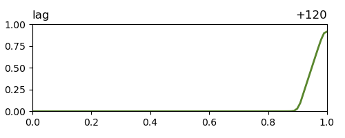

A step-by-step guide to creating a Flottplot page, introducing the core concepts by example.
Preliminaries
Files and Folders
The goal of this tutorial is make the following collection of plots accessible with Flottplot:
plot/adv_bwd_000.png,
plot/adv_bwd_012.png,
...,
plot/adv_bwd_120.png,
plot/adv_fwd_000.png,
plot/adv_fwd_012.png,
...,
plot/adv_fwd_120.png,
plot/adv_lag_000.png,
plot/adv_lag_012.png,
...,
plot/adv_lag_120.png.
These image files show the results of integrating a one-dimensional advection equation in three different ways: using explicit Euler time-stepping (fwd), using implicit Euler time-stepping (bwd) and using a semi-Lagrangian (lag) scheme.
Plots were produced for every 12 time units out to time 120 and the respective time of each plot can be determined from a three-digit zero-padded number in each file name.
It is not necessary to understand the contents of these plots.
However, it is important that information about the plots is contained in the file names.
Flottplot cannot extract information from file contents, therefore all relevant information must be be exposed via the file names.
Working with HTML
Flottplot pages are written in HTML, the markup language of the web.
Flottplot defines custom HTML elements (so-called "tags") and infuses them with additional functionality in a JavaScript-enabled web browser.
The custom elements can be integrated with any other (standard) HTML elements.
No prior HTML knowledge is required for Flottplot, but some basic knowlegde might lead to nicer pages.
Web browsers are built to be error tolerant and will try to display HTML as best as they can, even if it contains errors.
If you find that an element is missing in a page or encounter other issues, first make sure that your HTML tags are well-formed.
A common mistake is to leave HTML tags unfinished, usually because the closing tag (the one with a / before the name) is missing.
Flottplot usually reports errors directly in the page with red boxes around the elements on which they occur.
However, some errors are not caught by Flottplot (yet).
These errors can be diagnosed with the developer tools integrated into the browser.
When encountering a problem, additional information might be found in the JavaScript console.
Flottplot bugs can be reported via the GitHub issue tracker.
A Basic Page
The goal of this first part of the tutorial is to create a basic page with controls for the content of a single plot panel from scratch.
Initializing
Download the Flottplot JavaScript library with automatic element scan (flottplot-scan-min.js).
Create a new text file, e.g. page.html, in the same folder.
Open the file with a text editor and insert the following HTML code:
<!doctype html>
<html>
<head>
<meta charset="utf-8">
<title>A Flottplot Page</title>
<script type="text/javascript" src="flottplot-scan-min.js"></script>
</head>
<body>
</body>
</html>
This code contains the basic structure of an HTML page.
The title text between <title> and </title> can be freely chosen.
All page content is placed between <body> and </body>.
Open the HTML file with a browser and you should see an empty page.
With the Flottplot Python package, such a page can be initialized more easily by running
python3 -m flottplot init test.html
on the command line.
Adding Elements
The names of the files in the collection contain two variable parts: the scheme (fwd, bwd or lag) and the time step (000, 012, ..., 120).
First, we add a slider element for the time step into the <body> of the page.
Because the time step is numeric and regularly spaced, we can recreate a matching sequence of numbers with an <fp-range> element:
<fp-range id="step" type="slider" min="0" max="120" step="12"></fp-range>
The leftmost position of the slider corresponds to its minimum value (0), with values increasing by 12 for each step the slider takes to right.
Because we need to refer to the value of the slider later, the identifier step is given to the element.
Note that it is not necessary to account for the zero-padded formatting of the number in the file names already here.
Formatting of values is carried out later during pattern substitution.
Next, we add a dropdown menu with three options for the scheme-part of the file names.
We can specify the three values with an <fp-select> element:
<fp-range id="step" type="slider" min="0" max="120" step="12"></fp-range>
<fp-select id="scheme" type="dropdown">
<fp-option>fwd</fp-option>
<fp-option>bwd</fp-option>
<fp-option>lag</fp-option>
</fp-select>
Again, because we need to reference the selected value later, the element is named scheme.
Controlling a Plot
Finally we add a plot panel to the page and connect it to both value-providing elements via a substitution pattern:
<fp-range id="step" type="slider" min="0" max="120" step="12"></fp-range>
<fp-select id="scheme" type="dropdown">
<fp-option>fwd</fp-option>
<fp-option>bwd</fp-option>
<fp-option>lag</fp-option>
</fp-select>
<br>
<fp-plot src="plot/adv_{scheme}_{step:03}.png"></fp-plot>
The src (source) of the <fp-plot> element accepts a pattern for value substitution.
Instead of just using the path as given, Flottplot will substitute the current values of elements referenced in a substitution pattern and keep them updated when the state of these elements changes.
Here, {scheme} is replaced with either fwd, bwd or lag, depending on the state of the element named scheme (i.e. the dropdown menu introduced earlier).
Multiple substitutions are allowed, so we also substitute the value of our range step, with additional formatting to match the format of the number in the file names.
Formatting options in Flottplot work just as they do in Python's format method and are separated from the value with a colon inside the substitution which is enclosed by the curly braces.
The format 03 for numeric values used here means: enable zero-padding and fill up to a three-digit output.
<br> is part of standard HTML and introduces a line break.
It does not need to be closed.
An Advanced Page
Starting from the basic page created above, we add further plot panels and improve usability.
Using Labels
The abbreviations for the different integration schemes in the file names are not well understandable in the dropdown menu.
To provide a better description of the selection, we can change the labels of the options and introduce a custom attribute so that the abbreviated values are still available for substitution in the file name pattern:
<fp-range id="step" type="slider" min="0" max="120" step="12"></fp-range>
<fp-select id="scheme" type="dropdown">
<fp-option abbrev="fwd">Explicit Euler</fp-option>
<fp-option abbrev="bwd">Implicit Euler</fp-option>
<fp-option abbrev="lag">Semi-Lagrangian</fp-option>
</fp-select>
<br>
<fp-plot src="plot/adv_{scheme.abbrev}_{step:03}.png"></fp-plot>
Note that the choice of the attribute name is free and multiple attributes can be added in general.
Attributes are available on the value of the <fp-select>element during substitution.
In the example, {scheme} still refers to the label of the option, e.g. Explicit Euler, while {scheme.abbrev} accesses the associated value stored in the attribute abbrev (which was the label previously), e.g. fwd.
Synchronized Control
We now add a second plot panel to the page that shows an additional time step.
This time step is supposed to always be 12 time units later than the one already shown, so we need to perform an addition before substitution in the new plot:
<fp-range id="step" type="slider" min="0" max="108" step="12"></fp-range>
<fp-select id="scheme" type="dropdown">
<fp-option abbrev="fwd">Explicit Euler</fp-option>
<fp-option abbrev="bwd">Implicit Euler</fp-option>
<fp-option abbrev="lag">Semi-Lagrangian</fp-option>
</fp-select>
<br>
<fp-plot src="plot/adv_{scheme.abbrev}_{step:03}.png"></fp-plot>
<fp-plot src="plot/adv_{scheme.abbrev}_{step+12:03}.png"></fp-plot>
The value obtained from element step is increased by 12 before the substitution and also kept synchronized with the slider by Flottplot.
Common mathematical operations are available for numeric values.
Note that the maximum value of the slider was reduced by 12 to avoid showing a missing image in the time-shifted plot.
The page would not break when accessing a missing image, but for a better user experience the adjustment is done here.
To allow for a direct comparison between two integration schemes, a second dropdown menu and two more plots are added:
<fp-range id="step" type="slider" min="0" max="108" step="12"></fp-range>
<fp-select id="scheme_a" type="dropdown">
<fp-option abbrev="fwd">Explicit Euler</fp-option>
<fp-option abbrev="bwd">Implicit Euler</fp-option>
<fp-option abbrev="lag">Semi-Lagrangian</fp-option>
</fp-select>
<fp-select id="scheme_b" type="dropdown" init="Implicit Euler">
<fp-option abbrev="fwd">Explicit Euler</fp-option>
<fp-option abbrev="bwd">Implicit Euler</fp-option>
<fp-option abbrev="lag">Semi-Lagrangian</fp-option>
</fp-select>
<br>
<fp-plot src="plot/adv_{scheme_a.abbrev}_{step:03}.png"></fp-plot>
<fp-plot src="plot/adv_{scheme_a.abbrev}_{step+12:03}.png"></fp-plot>
<br>
<fp-plot src="plot/adv_{scheme_b.abbrev}_{step:03}.png"></fp-plot>
<fp-plot src="plot/adv_{scheme_b.abbrev}_{step+12:03}.png"></fp-plot>
The second dropdown menu is just a copy of the already existing one and both get new identifiers so they can be individually addressed (Flottplot enforces unique identifiers).
The new menu has its second option, Implicit Euler, selected by default.
The two rows of plots are connected to one of the dropdown menus each.
All plots are synchronized with the slider providing a value for step.
Adding Convenience
The final Flottplot elements added to the page add some convenience:
<fp-button action="step.prev">-12</fp-button>
<fp-range id="step" type="slider" min="0" max="108" step="12" wrap="both"></fp-range>
<fp-button action="step.next">+12</fp-button>
<fp-animation target="step"></fp-animation>
<fp-select id="scheme_a" type="dropdown">
<fp-option abbrev="fwd">Explicit Euler</fp-option>
<fp-option abbrev="bwd">Implicit Euler</fp-option>
<fp-option abbrev="lag">Semi-Lagrangian</fp-option>
</fp-select>
<fp-select id="scheme_b" type="dropdown" init="Implicit Euler">
<fp-option abbrev="fwd">Explicit Euler</fp-option>
<fp-option abbrev="bwd">Implicit Euler</fp-option>
<fp-option abbrev="lag">Semi-Lagrangian</fp-option>
</fp-select>
<br>
<fp-plot id="plot_a" src="plot/adv_{scheme_a.abbrev}_{step:03}.png"></fp-plot>
<fp-plot src="plot/adv_{scheme_a.abbrev}_{step+12:03}.png"></fp-plot>
<br>
<fp-plot id="plot_b" src="plot/adv_{scheme_b.abbrev}_{step:03}.png"></fp-plot>
<fp-plot src="plot/adv_{scheme_b.abbrev}_{step+12:03}.png"></fp-plot>
<fp-cursors>
<fp-cursor target="plot_a"></fp-cursor>
<fp-cursor target="plot_b"></fp-cursor>
</fp-cursors>
The prev and next actions of the slider are assigned to two <fp-button> elements such that they can be used as an alternative way to change the time step (other than dragging the slider).
An <fp-animation> element for the slider additionally provides the option to let Flottplot advance the time step automatically.
Wrapping is enabled on the slider with wrap="both" to allow the animation (and buttons) to loop indefinitely.
Cursor mirroring between the left plots in each row is enabled with an <fp-cursors> element.
Moving the cursor into one of these plots will now show a second cursor at the same location in the other plot for easy comparison of values.
Conclusions
We have build a page with 4 synchronized plots, controlled by multiple value-providing elements through substitution patterns that are automatically kept up to date by Flottplot.
The values of these elements can be modified by computation and/or formatting during substitution and the elements themselves are further controlled via actions, triggered, e.g., by a button press.
These concepts are the core of all Flottplot functionality.
The elements reference lists all attributes and behaviour of the available Flottplot elements.
It also contains short examples showing how to use these elements.
{kind=link}
{kind=link}
{kind=link}
{kind=link}
{kind=link}
{kind=link}
{kind=link}
{kind=link}
{kind=link}